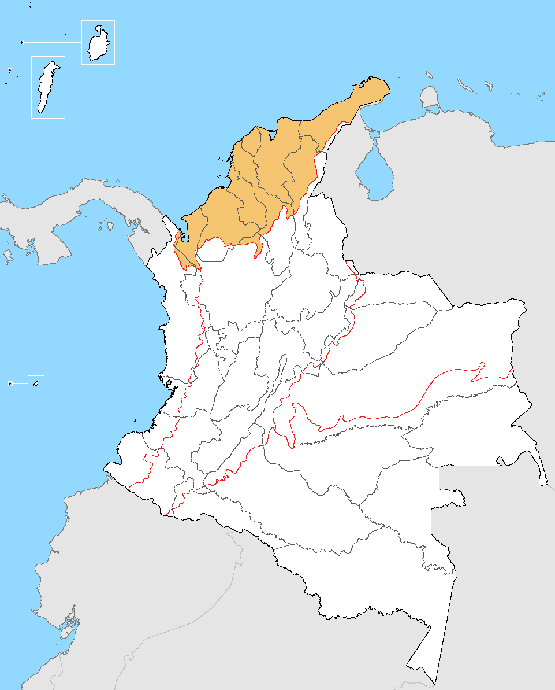
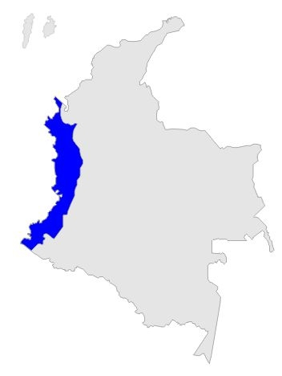
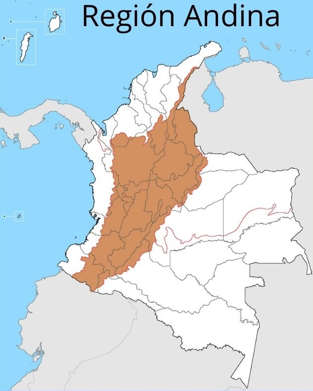
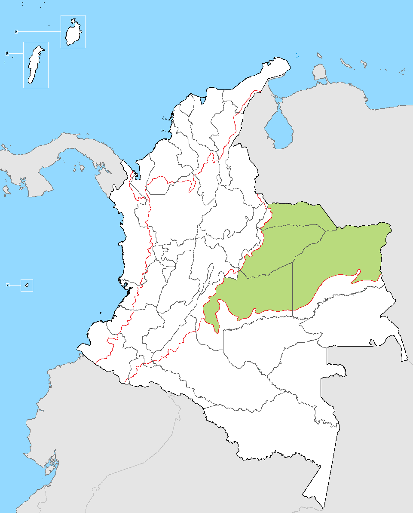
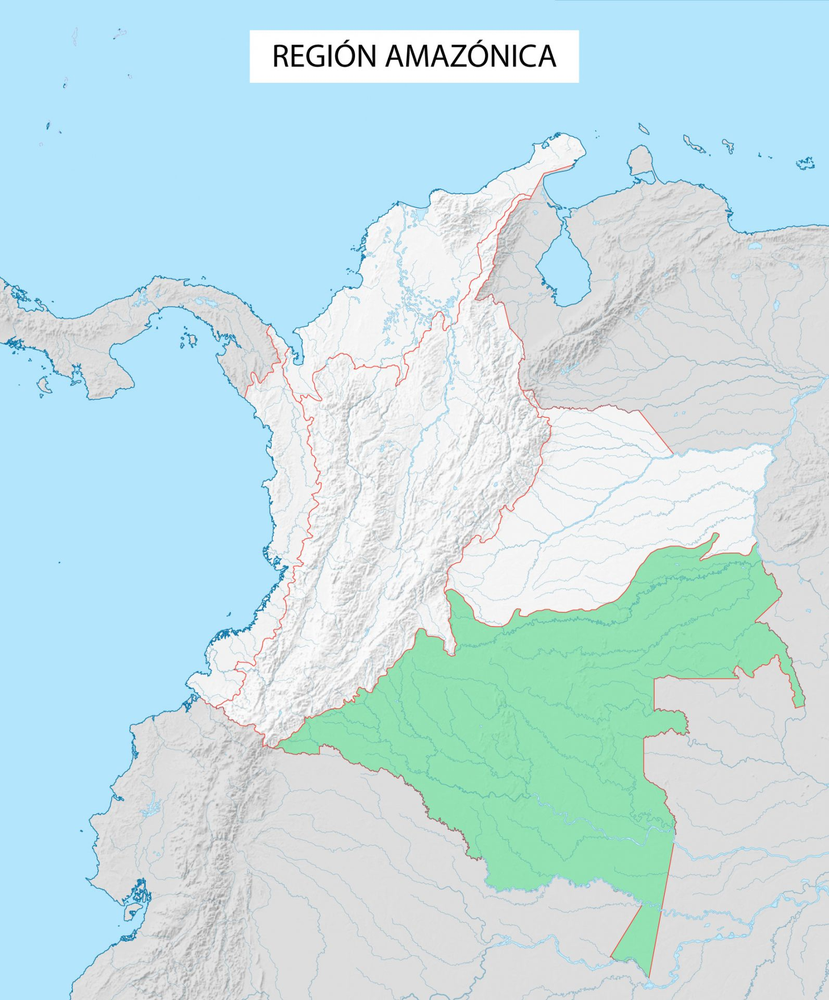
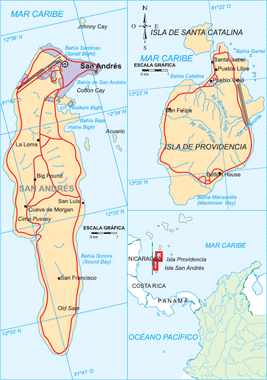

BIENVENIDOS A ARNIM
Quienes somos ?
Somos un grupo de jóvenes que les gusta viajar y compartir experiencias con personas igual de aventureras
Hemos creado una plataforma para que los viajeros descubran nuevos lugares, compartan experiencias y hagan más grande la
comunidad de viajeros por Colombia
Que es arnim?
Arnim es la traducción de una palabra del idioma albanés y es muy usada en nuestra region “parche”
Por que creemos que esta palabra transmite toda la energía que nos da conocer nuevos lugares
TURISMO EN ANTIOQUIA

GUATAPÉ
TURISMO
Alugnos recorridos turisticos que puedes hacer en este sitio es visitar la Plazoleta de los zócalos, Malecón de Guatapé, subir la piedra del peñol, visitar la calle del recuerdo y diferentes recreaciones acuáticas.

DON MATÍAS
TURISMO
en este sorprendente pueblo vas a poder visitar el corregimiento de bellavista, conocer la fabrica de confección mas grande de Colombia, visitar el monumento a la madre, el puente santander, entre otros.
CONCEPCIÓN
TURISMO
Aquí podrás visitar la cascada matasano,subir al mirador el alto del a virgen, sentarse en el parque principal José María Córdova, y caminar por el charco de los payasos, entre otros.
JARDÍN
TURISMO
Aqui podrás hacer senderismo de la cuava del esplendor, hacer tours cafeteros, visitarlas trucheras y podrás tener aventura en deportes extremos.

JERICÓ
TURISMO
Aquí podrás visitar el morro el Cristo, los chorros de quebradona, el museo de antropología y arte de Jericó y la casa museo José Tomás Uribe Abad.
LA UNIÓN
TURISMO
Te recomendamos ir bien abrigado por las bajas temperaturas que allí se presentan, aqui podras disfrutar el contacto con la naturaleza y rutas camineras.
SANTA FÉ DE ANTIOQUÍA
TURISMO
Aquí podrás caminar por el centro histórico, entrar al museo de arte religioso, conocer el puente de occidente y disfrutar los eventos culturales y ferias.
TAMESIS
TURISMO
Aquí visitarás el Balneario y zona de camping Río Frío, los organales de San Antonio, el museo arqueológico cartama y el camino pehispánico.
EXPERIENCIAS
Acá te contaremos las experiencias que nos han contado algunas personas que han viajado por diferentes lugares de colombia en general
Imagenes sacadas de http://pexels.com

Me parece increible! todos los lugares que he conocido son hermosos, colombia tiene muchos paraisos ocultos

Ha sido una experiencia unica, es uno de los mejores paises que he visitado, su cultura es magnifica!

Su gastronomia es algo increible, me he conectado mucho con la naturaleza y con cada uno de sus paisajes, volveria mil veces!

Conoci culturas indigenas, y me parecieron sorprendente su cultura y su forma de vivir con la naturaleza y tendiendo a ser una vida muy medieval
TURISMO EN COLOMBIA
En esta seccion encontraras los destinos con mejor acogida turistica de cada region de colombia,
CARIBE
GUAJIRA
catedral nuestra señora de los remedios, mezquita de maicao, palomino, playa del pilón de azúcar, Punta gallinas, Riohacha, santuario de fauna y flora los flamencos, serrania de macuira.
foto tomada de: https://upload.wikimedia.org/wikipedia/ commons/6/6d/Region_Caribe_de_Colombia.png
PACÌFICO
CHOCÓ
Isla gorgona, parque natural utría, Tumaco, Nuquí, Bahía Solano,
foto tomada de: https://mipledianacrisprimaria.webnode .com.co/l/region-pacifico/
ANDINA
NARIÑO
laguna de la cocha,laguna verde, plaza de nariño, santuario de nuestra señora del rosario de las lajas, tumaco, volcán cumbal, cañon de juanambú, Pasto.
https://www.lifeder.com/caracteristicas-region-andina-colombia/
ORINOQUÌA
META
alto de menegua mitad de colombia , bioparque los ocarros, caño cristales, museo mirador turístico ecológico cultural la piedra del amor parrilla, parque avestruz, plaza los libertadores, parque las malocas, parque natural sierra de la macarena.
https://es.wikipedia.org/wiki/Archivo:Region_Orinoquia_de_Colombia.png
AMAZONÌA
LETICIA
parque nacional amacayacu, lago tarapoto, parque nacional natural río puré, parque natural yaigoje apaporis, puerto nariño, reserva natural flor de loto, Reserva Natural Omagua, Reserva Natural Victoria Regia.
foto sacada de: https://departamentosdecolombia.com/colombia/region-amazonica/
INSULAR
San Andrés
Johnny Cay, Bahía Cove, cueva morgan, iglesia bautista de la loma, parque natural Old Providence McBeen Lagoon
https://student-sport.weebly.com/regioacuten-insular.html